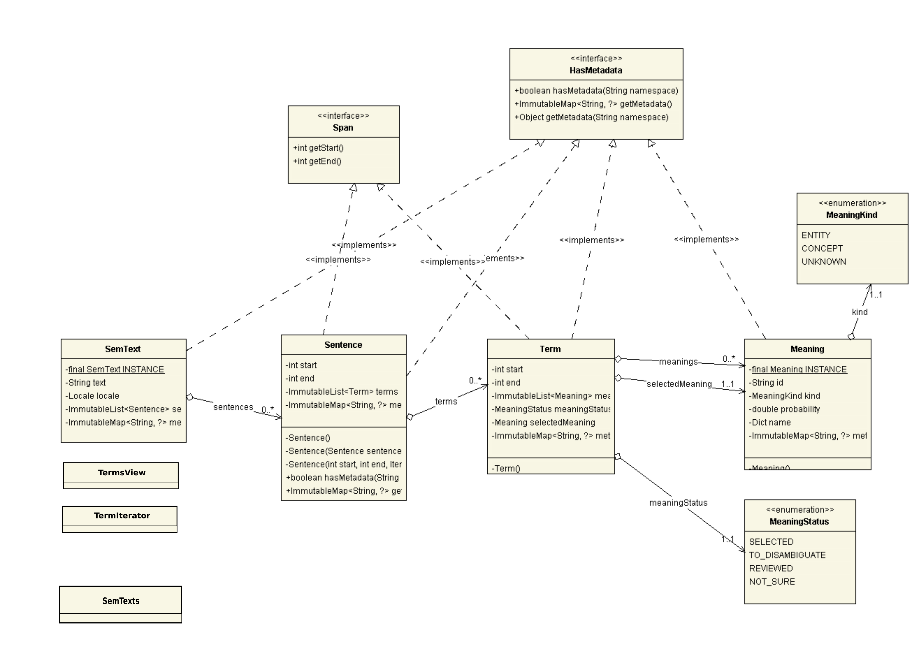

UML diagram
A SemText object contains a list of Sentence objects, which in turn can contain a list of Term objects.
Each Term has a MeaningStatus, and possibly a selected meaning and a list of alternative meanings suggested for disambiguation.
Both sentences and terms are spans, and actual text is only stored in root SemText object. Span` offsets are always absolute and calculated with respects to it. Spans can't overlap.
All of semantic text items (sentences, terms, meaning, semtext itself) can hold metadata.
Utility functions are held in SemTexts class and to iterate through semtext terms a TermsView and a TermIterator are provided.

Meaning state machine
SemText data model supports a simple interaction cycle with the user, where some nlp service enriches the text with tags and then a human user validates the tags. There are four possible MeaningStatus associated to a Term:

Maven
SemText is available on Maven Central. To use it, put this in the dependencies section of your pom.xml:
<dependency>
<groupId>eu.trentorise.opendata.semtext</groupId>
<artifactId>semtext</artifactId>
<version>1.0.0</version>
</dependency>
In case updates are available, version numbers follows semantic versioning rules.
Examples
Objects have no public constructor. To make them use factory methods starting with of:
SemText semText1 = SemText.of(Locale.ITALIAN, "ciao");
To obtain a modified version of an object, use with methods:
SemText semText2 = semText1.with("buongiorno");
assert semText1.getText().equals("ciao");
assert semText2.getText().equals("buongiorno");
Let's go through the steps to construct a SemText of one sentence and one term with SELECTED meaning.
We will pick this text:
String text = "Welcome to Garda lake.";
This builds theMeaning:
Meaning meaning = Meaning.of("http://someknowledgebase.org/entities/garda-lake",
MeaningKind.ENTITY,
0.7);
We indicate the span where Garda lake occurs (a Term can span many words):
Term term = Term.of(11, 21, MeaningStatus.SELECTED, meaning);
We finally construct the immutable SemText. Notice language can be set only for the whole SemText:
SemText semText = SemText.of(
Locale.ENGLISH,
text,
Sentence.of(0, 26, term)); // sentence spans the whole text
Only SemText actually contains the text. To retrieve it from a span use getText:
assert "Garda lake".equals(semText.getText(term));
SemTexts class contains utilities, like converters and checkers:
ImmutableList<SemText> semtexts = SemTexts.dictToSemTexts(Dict.of(Locale.ITALIAN, "Ciao"));
try {
SemTexts.checkScore(1.7, "Invalid score!");
} catch(IllegalArgumentException ex){
}
Other examples usages can be found in the tests